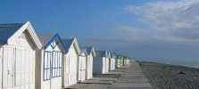
Cayeux, un festival très convivial. Plus de cent cervolistes quand même, mais Bruno organise ça de main de maître dans la simplicité et la bonne humeur. Pas trop aidé par la météo cette année, avec un vent "solide" et un peu de pluie par moments.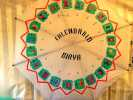
Pour commencer doucement, en attendant que la meteo s'améliore, les "CarnetDeVol" avaient organisé une animation "Amérique du Sud" avec un cerf-volant illustrant le calendrier maya...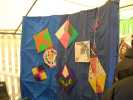
...des cerfs-volants, le plus souvent combattants (pipas...) mais pas toujours, et pas toujours en bambou, mais en plantes plus ou moins assimilées...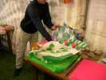
On pouvait aussi construire des mini-montgolfières en papier, Christophe gérant ce volet avec les stocks de papier, la paraffine pour créer les brûlots, etc.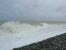
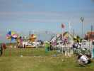
Du coup les moulins (on ne parle plus de moulinets, trop riquiqui !) de Joël moulent de la musique plein pot et l'eau éclabousse de partout de sa clepsydre éolochronologique...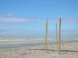
Les bambous à vent de Didier résonnent extraordinairement avec des modulations selon les remous et les masques du vent, créant des mélodies à plusieurs voix toujours renouvelées.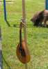
Il a aussi beaucoup d'instruments à corde...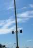
Il y a même des instruments jumeaux...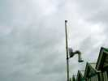
Ce cornet n'est pas à vent mais à corde (quand même éolien, d'accord) et amplifie les vibrations d'un ruban type arc sonore.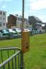
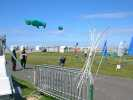
Des arcs vibrants sous tous les angles assurent une production continue...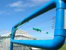
Bruno a aussi monté cette harpe horizontale, en tuyaux de PVC de fort diamètre, mais qu'il a quand même fallu haubaner pour assurer face au vent...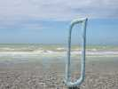
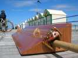
Mais Didier a amené sa superbe harpe qu'il ne cesse de perfectionner en ajoutant des cordes, des basses continues...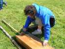
Avant de la mettre en place, il faut tendre les cordes et pré-accorder..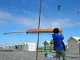
Une fois pendue sous la chèvre pour que les auditeurs aient le son en direct, il faut encore fignoler l'accord entre les cordes.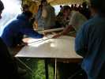
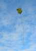
Vol stable de façon impressionnante, surtout par rapport aux autres cerfs-volants...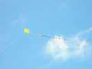
Ce carré (rectangle, d'ailleurs) a volé tout le week-end quel que soit le vent...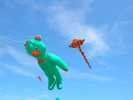
Sylvain a sorti une plus petite raie et un gros nounours....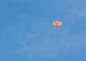
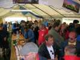
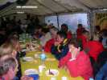
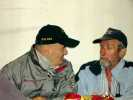
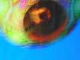
Evidemment, après le film, on essaye de faire voler des ballons ! Pas dehors, trop de vent, mais dans le barnum ! Ca manque un peu de place et surtout de hauteur, mais ça vole !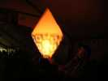
Henry Prat en gonfle un aussi...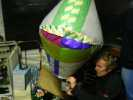
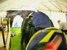
La fête se termine, il faut penser à dormir. Pour les campeurs, après un essai outdoor (=une armature cassée...), les tentes se montent... dans le barnum !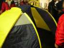
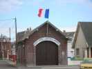
Dimanche matin, petit promenade le long de plage... Dommage, la brocante, cette année, tombe la semaine prochaine !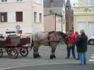
On peut faire des promenades en charrette... Le cheval montre un enthousiasme débordant pour cette activité !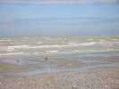
A voir la mer, on ne manquera pas de vent, et la météo n'est pas mauvaise, à cette heure, sur la grande plage de sable (à marée basse) de Cailloux, pardon, de Cayeux !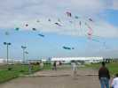
Finalement, il y a quand même pas mal de cerfs-volants en l'air, même si ça n'a pas l'air de troubler les boulistes (on n'a pas occupé leurs terrains, ou si peu...).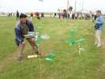
Pierre a ramené ses hélices de bouteille avec des pivots améliorés qui empêchent les déboîtements et facilitent la rotation.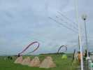
Les Hurricane ont monté leur camp dans leur strict ordonnancement habituel ! Et leurs "banderoles" sont bien stables, avec ce vent...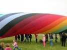
Fabian a monté sa grande turbine dont les enfants raffolent !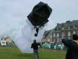
Jean-François a sorti aussi son bonhomme Noir et Blanc, qui rentre un peu le ventre dans ce vent !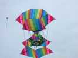
Et Joël n'a pas eu peur de sortir son Revolver, 4 ensembles tournant les uns dans les autres !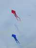
Un ensemble tricolore de Deltas dans le ciel de Cayeux : Vive la France !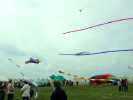
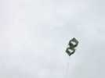
Mais dans ces conditions, des cerfs-volants qui ont traversé les âges remontent sur le devant de la scène, et on verra beaucoup de boîtes peu toilées !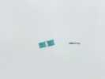
Encore une boîte !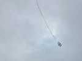
Une autre !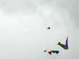
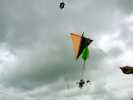
On fera aussi des lâchers de Nounours en parachute avec diplômes, pas trop haut car il faut courir loin, mais je les ai vu tricher, ils mettent des galets dans les poches des nounours pour raccourcir la trajectoire ! Et on larguera aussi des bonbons...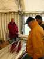
Avant le repas de midi, Bruno sort un rouleau de mylar à faire les sacs de purée qu'il a récupéré. Et chacun vient tirer son métrage. Le rouleau ne diminue pas, un micron à chaque tour, doit bien en rester 2 km ! ...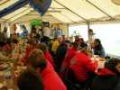
Du coup, le repas commence un peu tard, mais personne ne s'est plaint... Il durera aussi très longtemps (jusqu'à 16h00 !), c'est bizarre, les cerfs-volistes n'ont pas l'air pressés de repartir dans le vent sous la bruine !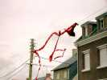
Claude nous monte un petit intermède pour animer l'après-midi : il accroche son flow-form et ses queues dans les lignes électriques. Le vent tire, ça rapproche les cables et une belle étincelle remonte les lignes jusqu'à ce qu'elles fondent !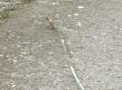